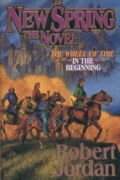
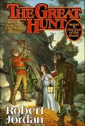
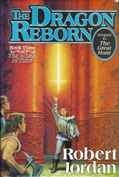
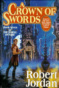
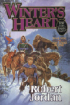
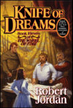

The server that hosted this site has, from everything I can tell, been permanently decommissioned. I will be hosting it here unless and until I can find a (free) host that will allow CGI scripting. The site is also being revised and updated; in particular, some modifications to the “look and feel” should be expected.
|  |  |  | ||
|
|
 |  | |
|  |
As you may have guessed, I am a fan of the series of books called The Wheel of Time written by Robert Jordan (a pseudonym for a certain James Rigney). While reading the series, I noted that the number of characters that appear in each book is extremely high, and that just about every character that is given a name says or does something that is of significance later in the series. It is for this reason that I decided to make a list of every named character (yes, every named character) that appears in each book, where he first appears, and what that person does or did that identified him when he appeared in the book (for some characters, they have done quite a bit by the time they are mentioned in, say, Winter's Heart). Note: the information contained herein is intended to be information known at the time the character was mentioned for the first time in each book with no “spoilers.”
Please note that the page numbers listed may correspond to different editions or printings of the books than you are using; the order and chapter numbers should still be correct, however.
There are 2785 named characters in the series. Enjoy!
 |